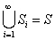
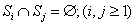
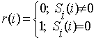
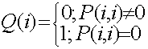

图灵机杂思(rev#2)
By 刘未鹏
C++的罗浮宫(http://blog.csdn.net/pongba)
C++ Template是图灵完备的（turing-complete，或者更确切的说，是图灵等价（turing-equivalent）），关于这一点是没什么悬念的，只是前几天有位朋友问到为什么说C++ Template是图灵完备的，为了找出当初的连接，于是又去搜了一下wikipedia和standford encyclopaedia，谁之这一搜之下又带出了一大堆内容，于是又花了好几个时辰将图灵机的相关理论复习了一遍，顺便以四十五度角仰视了一下Alan Turing的生平，神奇的是在追寻链接和搜索的过程中居然翻到了一篇关于constructive mathematics以及一篇关于Intuitionistic Logic的东东，那是后话，暂且不提。先来说说C++ Template和图灵机。
图灵机是图灵为了研究可计算问题而构思的一个理论装置，你只要想一想有限状态机就可以大概知道图灵机是个什么概念了，只不过图灵机的内存（纸带）是潜无穷的（也就是可以任意长啦，“潜无穷”是古稀蜡人的说辞）。图灵机的定义形象的说来就像老式的电传机：一个读写头，一根纸带（可能任意长），读写头不断读取纸带上的符号，并根据内在的状态转换规则转换当前状态，同时进行一些动作，譬如插除或改写当前字符，向前/向后移动读写头或保持不动等。至于其抽象的定义大抵就是有限状态机的定义了。
图灵机的这一定义现在我们看起来似乎是很显然的，然而当时却代表着一种思想上的革命，一种从无到有。图灵机实质上抽象出了我们平素进行机械式计算的核心规律，所以才等价于“一个人+纸笔+一定的规则”所进行的机械运算。
这么个理论机器首先就指明了创建计算机的可能性，然而这还不够，如果为了某一个问题就去创建一个特定的图灵机的话效率就太低了。图灵机理论的一个最美妙的结论就是存在“元图灵机（Universal Turing-Machine，直译应为一般图灵机/通用图灵机，然而“元图灵机”更精确地表达了其意思），所谓元图灵机其实就是把图灵机作为运算对象的图灵机，假设有一个元图灵机M，一个图灵机P以及P的输入数据D，那么将(P, D)喂给元图灵机M，M就能够吐出P(D)（即P在D上的结果）。而这便是现在我们所用的计算机的始祖模型，其中M就好比我们的计算机（元图灵机），P则是程序（编码后的图灵机），D则是程序P的输入数据。元图灵机的存在表明了我们可以用一台机器来解决所有图灵可计算（turing-computable）的问题——只要喂给它解决这个特定问题的图灵机编码（程序）以及问题的输入数据即可，该元图灵机就会模拟我们喂给它的那个图灵机P的行为，最终给出结果。元图灵机的存在性为计算机的诞生点燃了一盏明灯，这是图灵机理论中最漂亮的发现。
关于图灵机还有两个有名的Halting Problem和Busy Beaver Problem，不过前者更有名，但没有后者有意思，所以具体就不说了，可以google。这两个问题说明了图灵机并不是“万能”的，它只能解决可以“机械地”解决的问题，只不过这个“机械地”定义太过含糊，没有准确地界定，所以有必要精确定义一下图灵机到底能解决哪些问题，换句话说，到底哪些问题是图灵可计算的。
这里有一个非常漂亮的证明，是关于哪些数是图灵可计算的。我们说有无穷多个实数是图灵不可计算的。首先说明一下一个数是图灵可计算的是个什么概念，一个数是图灵可计算的就是说存在一个图灵机，给它一个空纸带，最终它能打印出任意逼近该数的结果。像pi、自然常数E以及所有多项式的根就都是图灵可计算的（可由机械步骤任意逼近），这很好理解，因为我们可以写一个程序来迭代任意逼近它们，譬如E就是一个无穷级数的和。但还有其它实数呢？有没有图灵不可计算的实数？要想弄明白这个问题，先要考虑一共存在多少个图灵机（废话，当然是无穷多个了，但“无穷多”也有一个级别问题:)），为此先将图灵机进行编码，由于图灵机的状态是有限的，将图灵机编码为一个五元组(Old_State, Symbol, New_State, New_Symbol, Move)的序列（或更多/更少都有可能，这是比较常见的一种编码方式，但总之一定是N-TUPLE，N有限），那么我们来考虑一个N-state(N个状态)，M-symbol的图灵机一共有多少种可能，为此，先考虑对应N-state、M-symbol的5-tuple（见上面的定义）有多少个，根据简单的排列组合规律，一共是N*M*N*M*3（最后一个3是指Move的可能性——静止/向前/向后），换句话说，也就是以M,N为参数的一个upper-bounded function。OK，现在来考虑一个图灵机的编码形式，一个图灵机其实就是由一集5-tuple所构成，所以既然N-state,M-symbol的5-tuple一共有N*M*N*M*3个，换句话说，这个由所有可能的5-tuple所构成的集合中一共有N*M*N*M*3个元素，那么这个集合的所有子集合的个数也就是N-state,M-symbol的所有图灵机的个数，根据幂集的定义，这也就是2N*M*N*M*3个。这里为了简单起见，我们暂且固定M为M0，即symbol的个数，这样所有M0-state的图灵机的个数就是：
21*M0*1*M0*3+22*M0*2*M0*3+23*M0*3*M0*3+… =  。
。
现在我们看到，这个和式的每一项都是countable的，而Z＋×Z＋尚且是可列集，就别说这里每项都有限的情况了，所以很容易就可以和Z＋建立起单射(injective)，换句话说，所有M0-state的图灵机的集合是一个可列集。好了，现在把M0换成变量，既然所有M0－state的图灵机集合都是可列的，而M0又是自然数（可列集），再加上“可列集个可列集”仍然是可列集这一性质，就容易得出一切图灵机构成的集合是可列集这一结论了。
其实证明一切图灵机所构成的集合的可列性还有一种更简单但取巧一点的办法：我们知道计算机语言是图灵等价的，所以讨论“一切图灵机”其实相当于讨论“一切计算机程序”，而从二进制层面来看，一个计算机程序可以被看成0和1的序列，基于这种表示，“一切计算机程序”所成集合的势也就呼之欲出了，因为 “一切计算机程序”=“所有长度为1的计算机程序”+“所有长度为2的计算机程序”+“所有长度为3的计算机程序”+…。把“所有长度为i的计算机程序”所成集合记为Si，“一切计算机程序”所成集合记为S，立即有： ;以及 。我们记Si中的第j个元素为Si(j)，那么很容易就可以建立S跟Z＋之间的injective function（单射），只须令f: Si(j)->2i3j;显然f就是injective的。这就证明了S的可列性质。
那么，这一结论有什么重要意义呢？非常重要，我们知道，实数集是不可列的，其势（或称“基”）为阿列夫1（而Z，即整数集的势则是阿列夫0），所以即便耗尽所有图灵机仍然还是会有“列不出”的实数。要想严格证明这一点也很简单，只要运用cantor在证明集合论时运用的经典的“对角线”手法，不妨简单描述一下：
首先，既然所有图灵机的集合是一可列集，我们就可以用M0,M1,M2,…来表示它们。现在假设Mi能计算出的实数为Ai0.Ai1Ai2Ai3…。那么我们构造一个新的实数B=B0.B1B2B3...，使其满足B1≠A11,B2≠A22,B3≠A33,…,Bn≠Ann。这样构造出来的一个实数B可以保证不与任何Ai相等，同时这个B并不为任何图灵机所计算出来（因为刚才的Ai序列已经耗尽了所有的图灵机）。这某种程度上就表明图灵机的势为阿列夫0（尽管对图灵机并不能称“势”）。
除此之外，函数空间的所有函数也并不都是图灵可计算的，一个函数为图灵可计算其实就代表存在一个图灵机可以模拟该函数的行为。这一结论通过刚才的证明就很好解释了：因为函数空间的势为阿列夫2，比实数集还要大，怎么可能由图灵机来枚举尽呢？要证明也很简单，同样是对角线法，就不说了。
那么，既然我们已经从原则上肯定了有些函数是不可计算的，换句话说，有些函数你虽然知道它是函数，但你就是无法用图灵机来将它模拟出来，用今天的话说，就是无法编程实现！这可比较令人沮丧，居然有无法编程实现的函数。那么究竟能否造出这么一个函数来让人瞧瞧怎么个不能编程实现法呢？这就是所谓的Busy Beaver问题。Busy Beaver问题就是要构造这么一个函数，它用于计算任意一个N-state的图灵机的最大“生产率（Productivity）”，生产率的定义就是给一个图灵机一条空纸带，最终当该图灵机halt的时候数纸带上的1的个数，就是其生产率。所有N-state的图灵机的最大生产率就是指一切N状态的图灵机的生产率中的最大者。很显然，这是一个N的函数。记为L(n)。那么问题是，这个L(n)是否是图灵可计算的？答案是不行！用反证法：假设存在这么一个图灵机B，能够模仿L(n)的行为，那么我们将它接到一个特殊的n-state的图灵机I后面（I的作用是在纸带上留下n个1，作为B的输入，可以证明，这样的I是存在的），这样形成一个新的图灵机IB，这个新的图灵机的作用就是计算L(n)，其中n就是I的状态数，也是I的输出，B的输入。我们再在后面接上一个B，得到IBB这么一个图灵机，其效果为L(L(n))。那么现在考虑IBB自身的状态数，是I的状态数（即n）+2倍的B的状态数，假设B的状态数为b（b为有限值），那么IBB的状态数就是n+2b，那么可想而知n+2b状态的图灵机的最大productivity是肯定大于等于L(L(n))的，因为已经有一个图灵机的productivity是L(L(n))了，它就是IBB。这个不等式就是 L(n+2b)>=L(L(n))，由此我们可以推出n+2b>=L(n)（L(i)>=L(j)=>i>=j这一结论易证），又根据n的任意性，我们可以令其等于n+11，于是得 n+11+2b>=L(n+11)，而我们知道11状态可以实现出一个将纸带上的1的数目翻倍的这样一个图灵机（试试看吧:)很简单），于是L(n+11)>=2n（只要把前面的n状态用于一个产生n个1的图灵机，后面的11状态做成一个翻倍1的数目的图灵机即可），于是得到n+11+2b>=2n，于是得到11+2b>=n。根据n的任意性，b的有限性，这就得到了矛盾！（其实这里还隐含着另一层意思，即要实现这么一个图灵机，必须要有无穷多个状态才行，即b要任意大，而根据图灵机的定义，b是有限的）。
说到这里，想起还有一个经典的函数也是图灵不可计算的。上面已经提到，所有图灵可计算的实数所构成的集合是一可列集，记为S={s|s为图灵可计算的}（这是因为所有图灵机构成的集合是可列集），现构造这样一个函数f，使得f(j,i)=Sj(i)；其中Sj就是S中的以j为下标的元素,Sj(i)则是指Sj的第i位的值。我们断言这样一个f就是图灵不可计算的。欲证明这一点，我们假设存在一个图灵机P，满足P(j,i)=Sj(i)。现使用对角线法构造出一个新的不属于集合S的实数r，r满足：

我们发现，只要P存在，那么r就也是图灵可计算的，而这又跟r不属于S是矛盾的，所以推出“P不存在”这一结论。（注：为什么只要P存在r就也是图灵可计算的呢？这样想，我们构造一个新的图灵机Q，使满足：

这么个新的图灵机Q，只要喂给它一个下标i，就会吐出r的第i位，于是r就成了图灵可计算的了。
Church-Turing Thesis大意就是说，在所有以自然数为定义域的函数中，只有那些递归函数（这里递归函数也包括有限步骤的函数）才是图灵可计算的。这一结论界定了图灵机的计算能力。乃是非常重要的。其实想想也很直观，一个无穷不循环的函数自然需要无穷多个状态才能计算了。而一个图灵机的状态是有限的，在这个有限空间中转来转去最终肯定是坠入循环，这就好像两整数相除一样，要么除尽，要么无限循环小数，用鸽笼原理可以很容易地证明。
来简单说说C++ Template的图灵完备性（turing-complete，更准确地说是turing-equivalent，因为turing-complete一般是指一个问题是turing-computable的）。要想证明一门语言的图灵完备性从原则上来说就是要证明它可以解决图灵可计算的所有问题。或者构造出一种转换途径，能够把任何图灵可计算问题的解决方法转换为这门语言的程序。但这里还有一个更取巧的方法，用这门语言实现一个Universal Turing Machine（其实差不多就是有限状态机啦）。C++ Template就可以做到这一点，实际上这早已有人做过了。另外，一般来说一门语言只要有if判断，递归或循环结构以及最基本的赋值能力和四则运算就是图灵完备的了，而C++ Template恰巧这些都具备，其中if判断和递归结构是借助模板偏特化能力实现的，估计语言的设计者当初也没有料到这一点会给现代C++带来这么大的影响:)
另外，严格来说，现今任何计算机其实都不是turing-equivalent的，因为它们的内存是有穷的。而图灵机的内存则是潜无穷的。只不过只要不出现内存不耗尽的情况都一样啦:)
前面提到的constructive mathematics和intuitive logic不属于图灵机的内容，有空再写吧。
P.S 图灵机揭示了人类机械演算的深层机理，歌德尔的著名的不完备性定理跟图灵机的停机问题就是等价的。用通俗的话来说其实就是“没有全知全能的上帝”，这里上帝其实就隐喻在图灵机算模型限制之下的公理体系。不过这又是另一个故事了，有时间再写吧:)